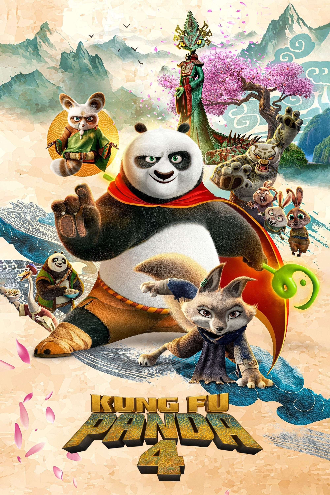

Kung Fu Panda 4

Diretor: Mike Mitchell
Com: Jack Black, Awkwafina, Viola Davis
Gênero: Animação - Aventura - Dublado
Censura: Livre
Tempo de duração: 94 min.
Sinopse: Po é escolhido para se tornar o Líder Espiritual do Vale da Paz, mas primeiro precisa encontrar e treinar um novo Dragão Guerreiro. Enquanto isso, uma vilã poderosa ameaça a paz, forçando Po a enfrentar seu maior desafio até agora.